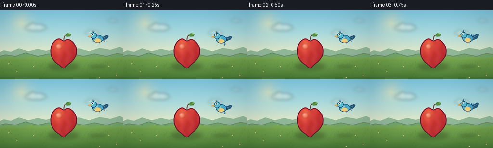
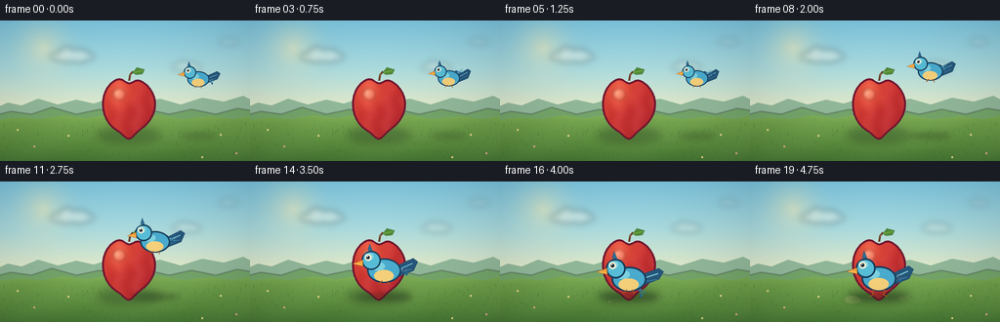
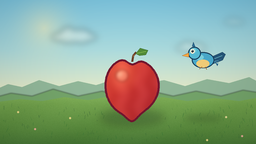
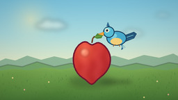
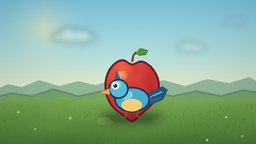
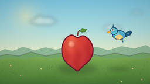
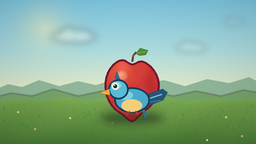

CODING AGENTS AS PIXEL WORLD MODELS
traex/DeepSeek-V4.1-Flash · dynamic_spatial_relationship_0040
点击播放 · 原生 RGB 像素
逐轮保存的候选
回放视频、检查图与代码变化。
每份候选均可单独播放。实际图片检查记录在下方工具轨迹中。
候选 01播放与检查图
点击播放 · 原生 RGB 像素


展开代码变化
--- 上一保存版本
+++ 本次保存版本
@@ -0,0 +1,514 @@
+from __future__ import annotations
+
+import math
+from pathlib import Path
+
+import numpy as np
+from PIL import Image, ImageDraw, ImageFilter
+
+import artifact_io
+
+
+ROOT = Path(__file__).resolve().parent
+WIDTH = 256
+HEIGHT = 144
+FRAMES = 20
+FPS = 4.0
+SS = 4
+W = WIDTH * SS
+H = HEIGHT * SS
+RNG = np.random.default_rng(20261110)
+
+
+def rgb(value: str) -> tuple[int, int, int]:
+ value = value.lstrip("#")
+ return tuple(int(value[i : i + 2], 16) for i in (0, 2, 4))
+
+
+def rgba(value: str, alpha: int = 255) -> tuple[int, int, int, int]:
+ return (*rgb(value), alpha)
+
+
+def smoothstep(value: float) -> float:
+ value = float(np.clip(value, 0.0, 1.0))
+ return value * value * (3.0 - 2.0 * value)
+
+
+def scaled_point(x: float, y: float) -> tuple[int, int]:
+ return round(x * SS), round(y * SS)
+
+
+def scaled_box(x0: float, y0: float, x1: float, y1: float) -> tuple[int, int, int, int]:
+ return round(x0 * SS), round(y0 * SS), round(x1 * SS), round(y1 * SS)
+
+
+def vertical_gradient(size: tuple[int, int], stops: list[tuple[float, tuple[int, int, int]]]) -> np.ndarray:
+ height, width = size[1], size[0]
+ y = np.linspace(0.0, 1.0, height, dtype=np.float32)
+ colors = np.zeros((height, 3), dtype=np.float32)
+ for i in range(len(stops) - 1):
+ p0, c0 = stops[i]
+ p1, c1 = stops[i + 1]
+ mask = (y >= p0) & (y <= p1)
+ if not np.any(mask):
+ continue
+ t = ((y[mask] - p0) / max(p1 - p0, 1e-6))[:, None]
+ colors[mask] = np.asarray(c0)[None, :] * (1.0 - t) + np.asarray(c1)[None, :] * t
+ colors[y < stops[0][0]] = stops[0][1]
+ colors[y > stops[-1][0]] = stops[-1][1]
+ return np.repeat(colors[:, None, :], width, axis=1)
+
+
+def add_glow(image: np.ndarray, center: tuple[float, float], radius: float, color: tuple[int, int, int], strength: float) -> None:
+ yy, xx = np.mgrid[0 : image.shape[0], 0 : image.shape[1]].astype(np.float32)
+ cx, cy = center[0] * SS, center[1] * SS
+ dist = np.sqrt((xx - cx) ** 2 + (yy - cy) ** 2) / (radius * SS)
+ glow = np.clip(1.0 - dist, 0.0, 1.0) ** 2
+ glow *= strength
+ image[:] = np.clip(image * (1.0 - glow[:, :, None]) + np.asarray(color)[None, None, :] * glow[:, :, None], 0, 255)
+
+
+def soft_shadow(layer: Image.Image, box: tuple[int, int, int, int], opacity: int, blur: float) -> None:
+ shadow = Image.new("RGBA", layer.size, (0, 0, 0, 0))
+ draw = ImageDraw.Draw(shadow)
+ draw.ellipse(box, fill=(32, 58, 34, opacity))
+ shadow = shadow.filter(ImageFilter.GaussianBlur(blur * SS))
+ layer.alpha_composite(shadow)
+
+
+def build_background() -> Image.Image:
+ sky = vertical_gradient(
+ (W, H),
+ [
+ (0.00, rgb("#7cc9e5")),
+ (0.35, rgb("#a9dce0")),
+ (0.66, rgb("#e7edc8")),
+ (0.78, rgb("#f6ddb0")),
+ (1.00, rgb("#f4d3a0")),
+ ],
+ )
+ add_glow(sky, (44, 28), 48, (255, 242, 183), 0.52)
+
+ image = Image.fromarray(sky.astype(np.uint8), "RGB").convert("RGBA")
+
+ cloud_layer = Image.new("RGBA", (W, H), (0, 0, 0, 0))
+ cloud = ImageDraw.Draw(cloud_layer)
+ for cx, cy, scale, alpha in [
+ (74, 37, 1.00, 85),
+ (191, 48, 0.70, 60),
+ (234, 22, 0.48, 45),
+ ]:
+ cloud.ellipse(scaled_box(cx - 23 * scale, cy - 5 * scale, cx + 23 * scale, cy + 5 * scale), fill=(255, 255, 244, alpha))
+ cloud.ellipse(scaled_box(cx - 14 * scale, cy - 10 * scale, cx + 2 * scale, cy + 6 * scale), fill=(255, 255, 244, alpha))
+ cloud.ellipse(scaled_box(cx - 2 * scale, cy - 8 * scale, cx + 17 * scale, cy + 6 * scale), fill=(255, 255, 244, alpha))
+ cloud_layer = cloud_layer.filter(ImageFilter.GaussianBlur(3.2 * SS))
+ image.alpha_composite(cloud_layer)
+
+ draw = ImageDraw.Draw(image)
+
+ far_hills = [
+ (-8, 91),
+ (8, 84),
+ (22, 87),
+ (39, 80),
+ (59, 86),
+ (78, 81),
+ (96, 85),
+ (118, 78),
+ (140, 84),
+ (164, 80),
+ (185, 86),
+ (207, 79),
+ (229, 83),
+ (249, 77),
+ (268, 87),
+ (268, 116),
+ (-8, 116),
+ ]
+ draw.polygon([scaled_point(x, y) for x, y in far_hills], fill=rgba("#8fb99c"))
+
+ hill_layer = Image.new("RGBA", (W, H), (0, 0, 0, 0))
+ hdraw = ImageDraw.Draw(hill_layer)
+ mid_hills = [
+ (-8, 98),
+ (11, 93),
+ (32, 96),
+ (53, 89),
+ (78, 96),
+ (102, 91),
+ (122, 96),
+ (147, 90),
+ (173, 96),
+ (196, 91),
+ (221, 96),
+ (243, 90),
+ (268, 94),
+ (268, 120),
+ (-8, 120),
+ ]
+ hdraw.polygon([scaled_point(x, y) for x, y in mid_hills], fill=rgba("#72a66c"))
+ hill_layer = hill_layer.filter(ImageFilter.GaussianBlur(0.6 * SS))
+ image.alpha_composite(hill_layer)
+
+ ground_mask = Image.new("L", (W, H), 0)
+ gmask = ImageDraw.Draw(ground_mask)
+ horizon = [
+ (-4, 102),
+ (20, 99),
+ (42, 101),
+ (64, 97),
+ (88, 100),
+ (112, 96),
+ (137, 100),
+ (163, 97),
+ (187, 101),
+ (214, 98),
+ (239, 101),
+ (260, 97),
+ (260, 148),
+ (-4, 148),
+ ]
+ gmask.polygon([scaled_point(x, y) for x, y in horizon], fill=255)
+
+ ground = vertical_gradient(
+ (W, H),
+ [
+ (0.63, rgb("#86b860")),
+ (0.73, rgb("#70a34e")),
+ (0.90, rgb("#588c3f")),
+ (1.00, rgb("#477a37")),
+ ],
+ )
+ yy, xx = np.mgrid[0:H, 0:W]
+ grain = RNG.normal(0.0, 3.1, (H, W, 1)).astype(np.float32)
+ wave = 2.0 * np.sin(xx / (17.0 * SS) + yy / (11.0 * SS))
+ ground = np.clip(ground + grain + wave[:, :, None], 0, 255).astype(np.uint8)
+ image.paste(Image.fromarray(ground, "RGB"), (0, 0), ground_mask)
+
+ detail = Image.new("RGBA", (W, H), (0, 0, 0, 0))
+ ddraw = ImageDraw.Draw(detail)
+
+ # Fine meadow strokes, kept away from the hero objects.
+ for _ in range(170):
+ x = float(RNG.uniform(3, 253))
+ y = float(RNG.uniform(106, 142))
+ if 105 < x < 163 and y < 132:
+ continue
+ length = float(RNG.uniform(1.2, 3.8))
+ lean = float(RNG.uniform(-1.1, 1.1))
+ shade = int(RNG.integers(70, 120))
+ ddraw.line(
+ [scaled_point(x, y), scaled_point(x + lean, y - length)],
+ fill=(35, shade, 48, int(RNG.integers(45, 105))),
+ width=max(1, round(0.55 * SS)),
+ )
+
+ for x, y, color in [
+ (18, 112, "#f5e08b"),
+ (35, 129, "#f4a9a0"),
+ (70, 118, "#f5e08b"),
+ (226, 117, "#f2e2a1"),
+ (242, 136, "#f6aaa4"),
+ (207, 140, "#f5e08b"),
+ ]:
+ ddraw.ellipse(scaled_box(x - 1.1, y - 1.1, x + 1.1, y + 1.1), fill=rgba(color, 210))
+ ddraw.ellipse(scaled_box(x - 0.35, y - 0.35, x + 0.35, y + 0.35), fill=rgba("#fff4b0", 235))
+
+ image.alpha_composite(detail)
+ return image
+
+
+def apple_contour(cx: float, cy: float, rx: float, ry: float) -> list[tuple[int, int]]:
+ points = []
+ for theta in np.linspace(0.0, math.tau, 240, endpoint=False):
+ x = cx + rx * math.sin(theta) * (1.0 + 0.035 * math.cos(theta))
+ y = cy - ry * math.cos(theta)
+ y += 6.2 * math.exp(-((x - cx) / 6.8) ** 2)
+ y += 1.0 * math.sin(theta * 2.0)
+ points.append(scaled_point(x, y))
+ return points
+
+
+def draw_apple(image: Image.Image, cx: float, cy: float) -> None:
+ soft_shadow(image, scaled_box(cx - 32, 110, cx + 32, 125), 80, 4.2)
+
+ contour = apple_contour(cx, cy, 26.5, 28.5)
+ mask = Image.new("L", (W, H), 0)
+ ImageDraw.Draw(mask).polygon(contour, fill=255)
+ mask_np = np.asarray(mask, dtype=np.float32) / 255.0
+
+ yy, xx = np.mgrid[0:H, 0:W].astype(np.float32)
+ nx = (xx / SS - cx) / 27.0
+ ny = (yy / SS - cy) / 30.0
+
+ highlight = np.clip(1.0 - np.sqrt(((nx + 0.42) / 0.80) ** 2 + ((ny + 0.48) / 0.82) ** 2), 0.0, 1.0) ** 1.25
+ rim = np.clip((nx + ny + 0.55) / 1.8, 0.0, 1.0)
+ base = np.asarray(rgb("#cf3d36"), dtype=np.float32)
+ warm = np.asarray(rgb("#ef6a4d"), dtype=np.float32)
+ dark = np.asarray(rgb("#9f2033"), dtype=np.float32)
+ color = base[None, None, :] * (1.0 - 0.46 * rim[:, :, None]) + dark[None, None, :] * (0.46 * rim[:, :, None])
+ color = color * (1.0 - highlight[:, :, None]) + warm[None, None, :] * highlight[:, :, None]
+
+ # A few tiny natural color variations make the fruit feel less plastic.
+ mottling = 5.0 * np.sin(xx / (3.1 * SS) + 0.6 * np.sin(yy / (4.0 * SS)))
+ color = np.clip(color + mottling[:, :, None], 0, 255)
+ apple = np.zeros((H, W, 4), dtype=np.uint8)
+ apple[:, :, :3] = color.astype(np.uint8)
+ apple[:, :, 3] = (mask_np * 255).astype(np.uint8)
+ layer = Image.fromarray(apple, "RGBA")
+ image.alpha_composite(layer)
+
+ draw = ImageDraw.Draw(image)
+ outline = [tuple(p) for p in contour]
+ draw.line(outline + [outline[0]], fill=rgba("#6f1730"), width=round(1.9 * SS), joint="curve")
+
+ # Stem and leaf sit behind the upper lobes.
+ draw.line(
+ [scaled_point(cx + 0.2, cy - 25.0), scaled_point(cx + 1.2, cy - 31.2), scaled_point(cx + 4.3, cy - 34.5)],
+ fill=rgba("#66402a"),
+ width=round(2.0 * SS),
+ joint="curve",
+ )
+ draw.line(
+ [scaled_point(cx + 1.1, cy - 29.8), scaled_point(cx + 2.2, cy - 32.2)],
+ fill=rgba("#aa7447"),
+ width=round(0.7 * SS),
+ )
+ leaf = [
+ (cx + 3.5, cy - 33.0),
+ (cx + 8.0, cy - 38.4),
+ (cx + 16.0, cy - 36.2),
+ (cx + 13.8, cy - 31.7),
+ (cx + 7.3, cy - 31.0),
+ ]
+ draw.polygon([scaled_point(x, y) for x, y in leaf], fill=rgba("#4f8b38"), outline=rgba("#315e2d"))
+ draw.line(
+ [scaled_point(cx + 4.8, cy - 33.2), scaled_point(cx + 13.8, cy - 35.2)],
+ fill=rgba("#8abf54"),
+ width=round(0.8 * SS),
+ )
+
+ # Soft specular shine and a small crisp glint.
+ shine_layer = Image.new("RGBA", (W, H), (0, 0, 0, 0))
+ sdraw = ImageDraw.Draw(shine_layer)
+ sdraw.ellipse(scaled_box(cx - 16.5, cy - 17.0, cx - 4.0, cy - 5.0), fill=(255, 221, 182, 72))
+ sdraw.ellipse(scaled_box(cx - 15.2, cy - 14.6, cx - 9.5, cy - 9.8), fill=(255, 246, 213, 120))
+ shine_layer = shine_layer.filter(ImageFilter.GaussianBlur(1.5 * SS))
+ image.alpha_composite(shine_layer)
+
+
+def draw_bird_shadow(image: Image.Image, x: float, y: float, scale: float, opacity: int) -> None:
+ width = 20.0 * scale
+ box = scaled_box(x - width, y + 14.0, x + width, y + 20.0)
+ shadow = Image.new("RGBA", (W, H), (0, 0, 0, 0))
+ ImageDraw.Draw(shadow).ellipse(box, fill=(30, 48, 27, opacity))
+ shadow = shadow.filter(ImageFilter.GaussianBlur(2.8 * SS))
+ image.alpha_composite(shadow)
+
+
+def rotate_local(px: float, py: float, angle: float) -> tuple[float, float]:
+ ca, sa = math.cos(angle), math.sin(angle)
+ return px * ca - py * sa, px * sa + py * ca
+
+
+def draw_bird(image: Image.Image, x: float, y: float, scale: float, wing_angle: float, landed: bool) -> None:
+ layer = Image.new("RGBA", (W, H), (0, 0, 0, 0))
+ draw = ImageDraw.Draw(layer)
+
+ def pt(px: float, py: float) -> tuple[int, int]:
+ return scaled_point(x + px * scale, y + py * scale)
+
+ def poly(points: list[tuple[float, float]], fill: tuple[int, int, int, int], outline: tuple[int, int, int, int] | None = None) -> None:
+ draw.polygon([pt(px, py) for px, py in points], fill=fill, outline=outline)
+
+ # Tail feathers.
+ tail_wag = 1.5 * math.sin(wing_angle * 1.7)
+ poly(
+ [(8.0, -3.0), (21.5, -9.5 + tail_wag), (25.0, -7.0 + tail_wag), (21.8, 0.0), (11.0, 4.3)],
+ rgba("#24577c"),
+ rgba("#143b59"),
+ )
+ draw.line([pt(10.0, -0.5), pt(21.0, -5.6 + tail_wag)], fill=rgba("#79c9d9"), width=max(1, round(0.8 * scale * SS)))
+ draw.line([pt(11.0, 1.5), pt(20.0, -1.4 + tail_wag)], fill=rgba("#3c86aa"), width=max(1, round(0.65 * scale * SS)))
+
+ # The wing is the largest motion cue. Its root stays fixed to the shoulder.
+ shoulder = (1.0, -2.0)
+ wing_length = 16.5 if not landed else 15.0
+ tip = (
+ shoulder[0] + wing_length * math.cos(wing_angle),
+ shoulder[1] + wing_length * math.sin(wing_angle),
+ )
+ perp = (-math.sin(wing_angle) * 3.5, math.cos(wing_angle) * 3.5)
+ wing_points = [
+ (shoulder[0] - 2.0, shoulder[1] - 3.0),
+ (shoulder[0] + 0.15 * wing_length * math.cos(wing_angle), shoulder[1] + 0.15 * wing_length * math.sin(wing_angle) + perp[1]),
+ (tip[0] + perp[0] * 0.45, tip[1] + perp[1] * 0.45),
+ (tip[0] + perp[0] * 1.25, tip[1] + perp[1] * 1.25),
+ (shoulder[0] + 0.55 * wing_length * math.cos(wing_angle) - perp[0] * 0.9, shoulder[1] + 0.55 * wing_length * math.sin(wing_angle) - perp[1] * 0.9),
+ (shoulder[0] + 1.0, shoulder[1] + 4.0),
+ ]
+ poly(wing_points, rgba("#216a9b"), rgba("#123d61"))
+ inner_tip = (shoulder[0] + 0.75 * (tip[0] - shoulder[0]), shoulder[1] + 0.75 * (tip[1] - shoulder[1]))
+ draw.line(
+ [pt(shoulder[0] + 0.4, shoulder[1] + 0.4), pt(inner_tip[0], inner_tip[1])],
+ fill=rgba("#6bc6d7"),
+ width=max(1, round(1.05 * scale * SS)),
+ )
+ for offset in (-1.7, 0.2, 2.0):
+ start = (
+ shoulder[0] + 0.42 * wing_length * math.cos(wing_angle) + perp[0] * 0.30,
+ shoulder[1] + 0.42 * wing_length * math.sin(wing_angle) + perp[1] * 0.30,
+ )
+ end = (tip[0] + perp[0] * offset * 0.25, tip[1] + perp[1] * offset * 0.25)
+ draw.line(
+ [pt(*start), pt(*end)],
+ fill=rgba("#2b82ad", 170),
+ width=max(1, round(0.45 * scale * SS)),
+ )
+
+ # Rounded body and head.
+ body_box = scaled_box(x - 12.5 * scale, y - 9.0 * scale, x + 12.5 * scale, y + 9.0 * scale)
+ draw.ellipse(body_box, fill=rgba("#48acd0"), outline=rgba("#153d5c"), width=max(1, round(1.15 * scale * SS)))
+ draw.ellipse(
+ scaled_box(x - 7.5 * scale, y - 0.5 * scale, x + 7.0 * scale, y + 8.2 * scale),
+ fill=rgba("#f1d17c"),
+ )
+ draw.ellipse(
+ scaled_box(x - 9.8 * scale, y - 6.5 * scale, x + 0.5 * scale, y - 0.1 * scale),
+ fill=rgba("#7bd2e3"),
+ )
+ head_center = (-9.6, -7.6)
+ draw.ellipse(
+ scaled_box(
+ x + (head_center[0] - 7.1) * scale,
+ y + (head_center[1] - 7.0) * scale,
+ x + (head_center[0] + 7.1) * scale,
+ y + (head_center[1] + 7.0) * scale,
+ ),
+ fill=rgba("#55bdd8"),
+ outline=rgba("#153d5c"),
+ width=max(1, round(1.15 * scale * SS)),
+ )
+ draw.ellipse(
+ scaled_box(
+ x + (head_center[0] - 5.2) * scale,
+ y + (head_center[1] - 5.5) * scale,
+ x + (head_center[0] + 1.8) * scale,
+ y + (head_center[1] - 0.1) * scale,
+ ),
+ fill=rgba("#83d6e2"),
+ )
+
+ # Beak, eye and small crown.
+ poly(
+ [(-15.8, -8.0), (-23.3, -5.1), (-15.7, -3.3)],
+ rgba("#f2a33b"),
+ rgba("#8f5222"),
+ )
+ draw.line([pt(-22.0, -5.2), pt(-16.1, -4.8)], fill=rgba("#ffc45b"), width=max(1, round(0.7 * scale * SS)))
+ eye_x, eye_y = -11.8, -9.7
+ draw.ellipse(
+ scaled_box(x + (eye_x - 2.4) * scale, y + (eye_y - 2.4) * scale, x + (eye_x + 2.4) * scale, y + (eye_y + 2.4) * scale),
+ fill=rgba("#f9f4da"),
+ )
+ draw.ellipse(
+ scaled_box(x + (eye_x - 1.35) * scale, y + (eye_y - 1.4) * scale, x + (eye_x + 1.2) * scale, y + (eye_y + 1.2) * scale),
+ fill=rgba("#132b3a"),
+ )
+ draw.ellipse(
+ scaled_box(x + (eye_x - 0.8) * scale, y + (eye_y - 1.1) * scale, x + (eye_x - 0.1) * scale, y + (eye_y - 0.4) * scale),
+ fill=(255, 255, 255, 245),
+ )
+ poly([(-12.2, -15.2), (-10.7, -20.0), (-8.5, -14.4)], rgba("#2c6f98"), rgba("#153d5c"))
+
+ if landed:
+ draw.line([pt(-4.0, 7.5), pt(-4.8, 12.0), pt(-7.4, 13.0)], fill=rgba("#9a5d27"), width=max(1, round(0.7 * scale * SS)))
+ draw.line([pt(4.0, 7.2), pt(3.2, 11.5), pt(5.8, 12.7)], fill=rgba("#9a5d27"), width=max(1, round(0.7 * scale * SS)))
+ else:
+ draw.line([pt(-1.5, 7.6), pt(-4.3, 10.1)], fill=rgba("#9a5d27"), width=max(1, round(0.65 * scale * SS)))
+ draw.line([pt(2.3, 7.5), pt(4.0, 10.4)], fill=rgba("#9a5d27"), width=max(1, round(0.65 * scale * SS)))
+
+ image.alpha_composite(layer)
+
+
+def bird_pose(frame: int) -> tuple[float, float, float, float, bool]:
+ if frame < 4:
+ q = 0.0
+ x = 203.0 + 0.8 * math.sin(frame * 0.8)
+ y = 60.0 + 1.1 * math.sin(frame * 1.4)
+ scale = 0.90
+ wing = 0.26 + 0.72 * math.sin(math.pi * frame / 2.0)
+ return x, y, scale, wing, False
+
+ if frame <= 16:
+ q = smoothstep((frame - 4) / 12.0)
+ x = 203.0 + (132.0 - 203.0) * q
+ y = 60.0 + 40.0 * q - 25.0 * math.sin(math.pi * q)
+ scale = 0.90 + 0.52 * q
+ wing = 0.18 + 0.86 * math.sin(math.pi * frame / 1.55)
+ return x, y, scale, wing, False
+
+ settle = smoothstep((frame - 16) / 3.0)
+ x = 132.0 + 0.9 * math.sin((frame - 16) * 1.4) * (1.0 - settle)
+ y = 99.5 + 0.7 * (1.0 - settle)
+ scale = 1.42
+ wing = 0.22 - 0.16 * settle
+ return x, y, scale, wing, settle > 0.55
+
+
+def draw_landing_dust(image: Image.Image, frame: int) -> None:
+ if frame < 16:
+ return
+ layer = Image.new("RGBA", (W, H), (0, 0, 0, 0))
+ draw = ImageDraw.Draw(layer)
+ strength = smoothstep((frame - 16) / 3.0)
+ for i, (dx, dy, radius) in enumerate([(-20, 12, 1.8), (-15, 13, 1.1), (18, 11, 1.5), (23, 12, 0.9)]):
+ spread = 1.0 + 3.5 * strength
+ px = 132 + dx - (8 if dx < 0 else -8) * strength
+ py = 111 + dy - 2.0 * strength
+ alpha = int((90 - 25 * i) * (1.0 - 0.55 * strength))
+ draw.ellipse(
+ scaled_box(px - radius * spread, py - radius * spread * 0.55, px + radius * spread, py + radius * spread * 0.55),
+ fill=(237, 218, 157, alpha),
+ )
+ layer = layer.filter(ImageFilter.GaussianBlur(0.65 * SS))
+ image.alpha_composite(layer)
+
+
+def render_frame(frame: int, background: Image.Image) -> np.ndarray:
+ image = background.copy()
+ draw_apple(image, 132.0, 86.5)
+
+ x, y, scale, wing, landed = bird_pose(frame)
+ progress = frame / (FRAMES - 1)
+ shadow_alpha = round(54 + 48 * smoothstep(progress))
+ draw_bird_shadow(image, x, 101.0, scale, shadow_alpha)
+ draw_bird(image, x, y, scale, wing, landed)
+ draw_landing_dust(image, frame)
+
+ # Gentle vignette and a restrained warm/cool grade.
+ arr = np.asarray(image.convert("RGB"), dtype=np.float32)
+ yy, xx = np.mgrid[0:H, 0:W].astype(np.float32)
+ nx = (xx / W - 0.5) * 2.0
+ ny = (yy / H - 0.5) * 2.0
+ vignette = np.clip(1.0 - 0.105 * (nx * nx * 0.72 + ny * ny * 0.48), 0.84, 1.0)
+ arr *= vignette[:, :, None]
+ arr[:, :, 0] = np.clip(arr[:, :, 0] * 1.018 + 1.0, 0, 255)
+ arr[:, :, 2] = np.clip(arr[:, :, 2] * 0.992, 0, 255)
+
+ small = Image.fromarray(np.clip(arr, 0, 255).astype(np.uint8), "RGB").resize((WIDTH, HEIGHT), Image.Resampling.LANCZOS)
+ result = np.asarray(small, dtype=np.uint8)
+ return result
+
+
+def main() -> None:
+ background = build_background()
+ frames = np.stack([render_frame(index, background) for index in range(FRAMES)], axis=0)
+ assert frames.shape == (FRAMES, HEIGHT, WIDTH, 3)
+ assert frames.dtype == np.uint8
+ artifact_io.save(frames, ROOT)
+ print(f"saved {FRAMES} frames at {WIDTH}x{HEIGHT}, {FPS:g} fps")
+
+
+if __name__ == "__main__":
+ main()
候选 02播放与检查图
点击播放 · 原生 RGB 像素

展开代码变化
--- 上一保存版本
+++ 本次保存版本
@@ -89,7 +89,7 @@
)
add_glow(sky, (44, 28), 48, (255, 242, 183), 0.52)
- image = Image.fromarray(sky.astype(np.uint8), "RGB").convert("RGBA")
+ image = Image.fromarray(sky.astype(np.uint8)).convert("RGBA")
cloud_layer = Image.new("RGBA", (W, H), (0, 0, 0, 0))
cloud = ImageDraw.Draw(cloud_layer)
@@ -183,7 +183,7 @@
grain = RNG.normal(0.0, 3.1, (H, W, 1)).astype(np.float32)
wave = 2.0 * np.sin(xx / (17.0 * SS) + yy / (11.0 * SS))
ground = np.clip(ground + grain + wave[:, :, None], 0, 255).astype(np.uint8)
- image.paste(Image.fromarray(ground, "RGB"), (0, 0), ground_mask)
+ image.paste(Image.fromarray(ground), (0, 0), ground_mask)
detail = Image.new("RGBA", (W, H), (0, 0, 0, 0))
ddraw = ImageDraw.Draw(detail)
@@ -255,7 +255,7 @@
apple = np.zeros((H, W, 4), dtype=np.uint8)
apple[:, :, :3] = color.astype(np.uint8)
apple[:, :, 3] = (mask_np * 255).astype(np.uint8)
- layer = Image.fromarray(apple, "RGBA")
+ layer = Image.fromarray(apple)
image.alpha_composite(layer)
draw = ImageDraw.Draw(image)
@@ -496,7 +496,7 @@
arr[:, :, 0] = np.clip(arr[:, :, 0] * 1.018 + 1.0, 0, 255)
arr[:, :, 2] = np.clip(arr[:, :, 2] * 0.992, 0, 255)
- small = Image.fromarray(np.clip(arr, 0, 255).astype(np.uint8), "RGB").resize((WIDTH, HEIGHT), Image.Resampling.LANCZOS)
+ small = Image.fromarray(np.clip(arr, 0, 255).astype(np.uint8)).resize((WIDTH, HEIGHT), Image.Resampling.LANCZOS)
result = np.asarray(small, dtype=np.uint8)
return result
可观测工具轨迹
实际执行的命令与返回图片。
命令 1exit 0
/bin/bash -c "pwd && rg --files -g '"'!**/.git/**'"' | sed -n '1,200p'"
命令 2exit 0
/bin/bash -c "sed -n '1,240p' prompt.txt"
命令 3exit 0
/bin/bash -c "sed -n '1,280p' GENERATION_RULES.md"
命令 4exit 0
/bin/bash -c 'cat task_spec.json'
命令 5exit 0
/bin/bash -c "sed -n '1,260p' artifact_io.py"
命令 6exit 0
/bin/bash -c "sed -n '1,260p' player_template.html"
命令 7exit 0
/bin/bash -c "python - <<'PY' import importlib.util for m in ['numpy','PIL','imageio','cv2','matplotlib']: print(m, bool(importlib.util.find_spec(m))) PY"
命令 8exit 0
/bin/bash -c 'python generate.py'
命令 9exit 0
/bin/bash -c "python generate.py && python - <<'PY'
from pathlib import Path
import json
import numpy as np
from PIL import Image
root=Path('.')
spec=json.loads((root/'task_spec.json').read_text())
frames=sorted((root/'frames').glob('*.png'))
assert len(frames)==spec['frames'], len(frames)
a=np.stack([np.asarray(Image.open(p).convert('RGB')) for p in frames])
assert a.shape==(spec['frames'],spec['height'],spec['width'],3), a.shape
assert a.dtype==np.uint8
assert (root/'pixels.npz').is_file() and (root/'index.html').is_file()
print('frames', a.shape, 'fps', spec['fps'], 'bytes', (root/'pixels.npz').stat().st_size)
print('unique colors first/last', len(np.unique(a[0].reshape(-1,3),axis=0)), len(np.unique(a[-1].reshape(-1,3),axis=0)))
print('mean abs adjacent change', float(np.mean(np.abs(a[1:].astype(np.int16)-a[:-1].astype(np.int16)))))
PY"命令 10exit 0
/bin/bash -c 'git status --short 2>/dev/null || true; du -h frames/00.png frames/19.png inspection.png pixels.npz index.html'
视觉工具实际返回图片 1

视觉工具实际返回图片 2

视觉工具实际返回图片 3

视觉工具实际返回图片 4

视觉工具实际返回图片 5

视觉工具实际返回图片 6

保存候选 2 份；完成命令 10 次；可验证图片返回 6 张。原始 API 响应与完整日志保留在本地。